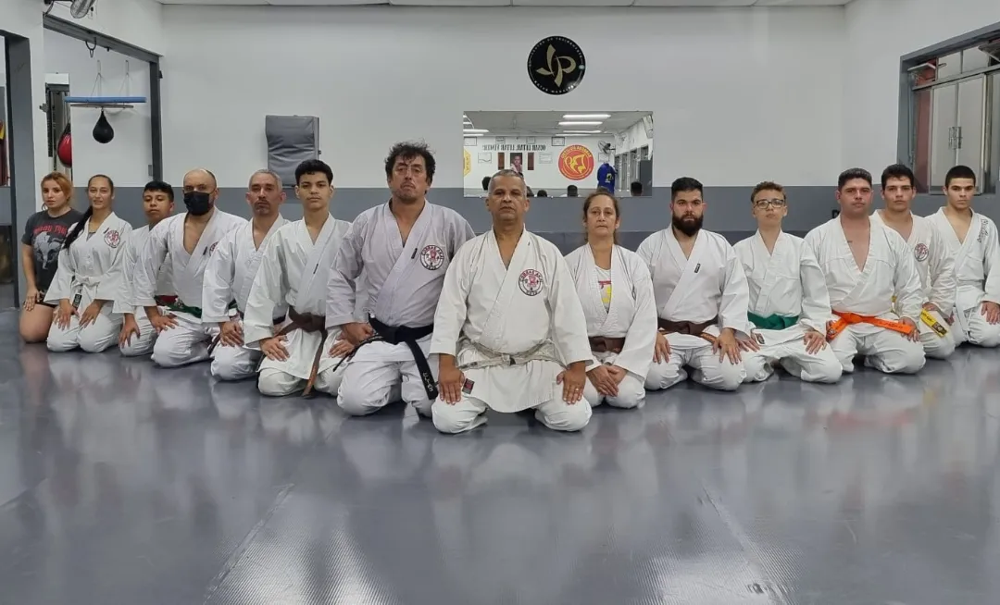
PERTENCER / COBRAS AKAI
Comece pelo
karate.
Conheça o Shotokan e o Genseiryu na Cobras Akai. Converse com a equipe para encontrar sua turma e dar o primeiro passo.
 COBRAS AKAIDOJO
COBRAS AKAIDOJOACADEMIA DE KARATE, LUTAS E FITNESS
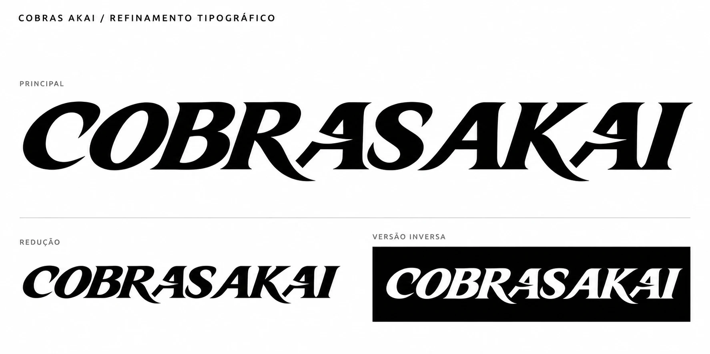
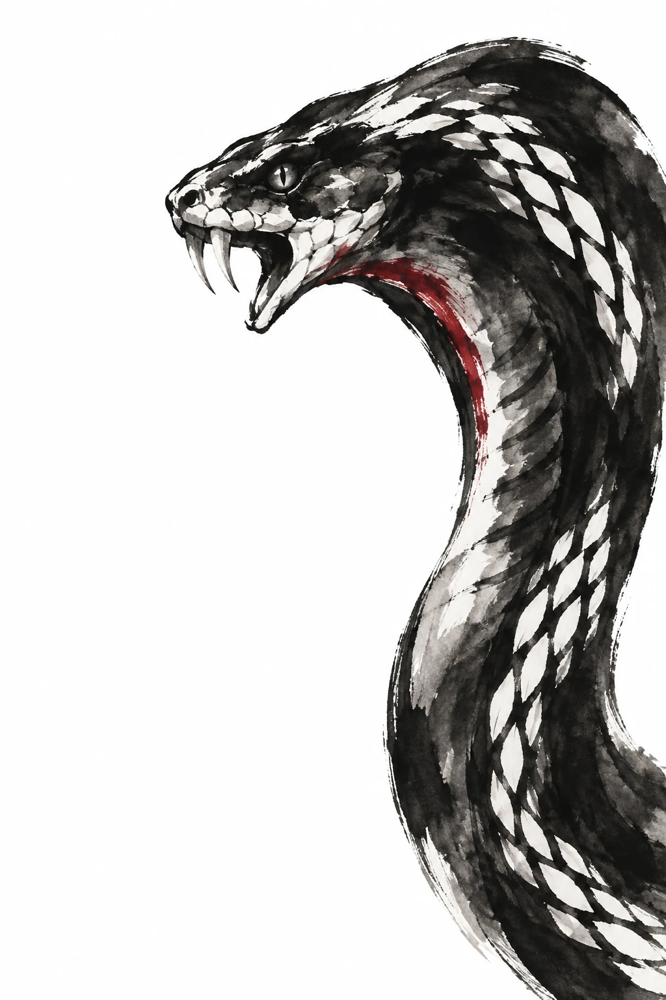
O QUE VOCÊ QUER PRATICAR?
A Cobras Akai reúne karate, lutas e fitness na Rua Major Dantas Cortes, 687. Explore as atividades e converse com a equipe sobre as turmas.
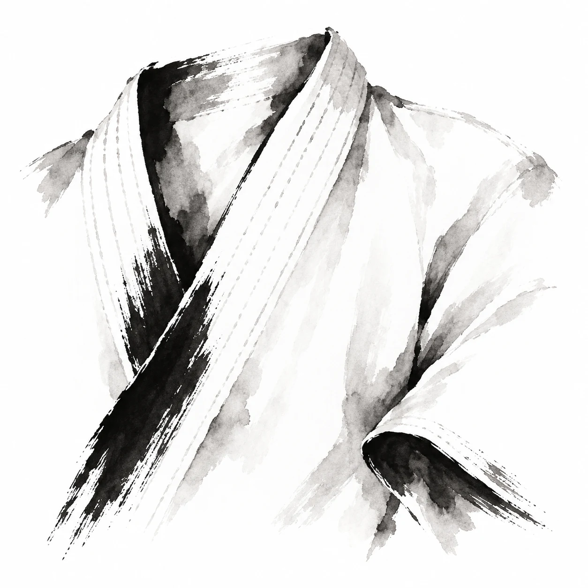
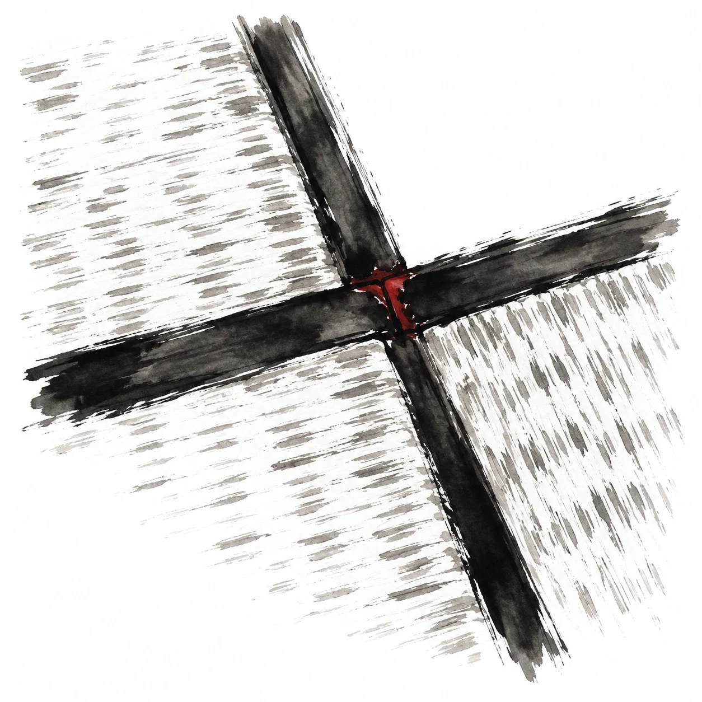
KARATE
Conheça os dois estilos presentes na academia. As aulas de Shotokan incluem turmas para adultos e crianças.
Conhecer o karateLUTAS
Jiu-jitsu, boxe japonês e prática com armas. Explore as propostas e consulte as turmas.
Explorar as lutasFITNESS E TREINO INDIVIDUAL
Karatê HIIT, Force Training, alongamento, Circuit Training e Personal Fight. Conheça as opções.
Ver atividades e aulas individuaisQUEM FAZ A COBRAS AKAI
A Cobras Akai começou com o Shihan Ivam Silva dando aulas na sala de casa. À frente da própria academia, ele fez do ensino e da prática uma trajetória que também passa pelas competições.
Ao longo desse percurso, levou outros praticantes a competir e a participar da comunidade das artes marciais, no Brasil e fora dele.
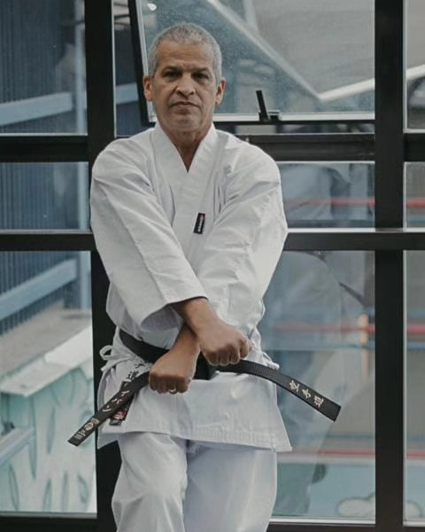
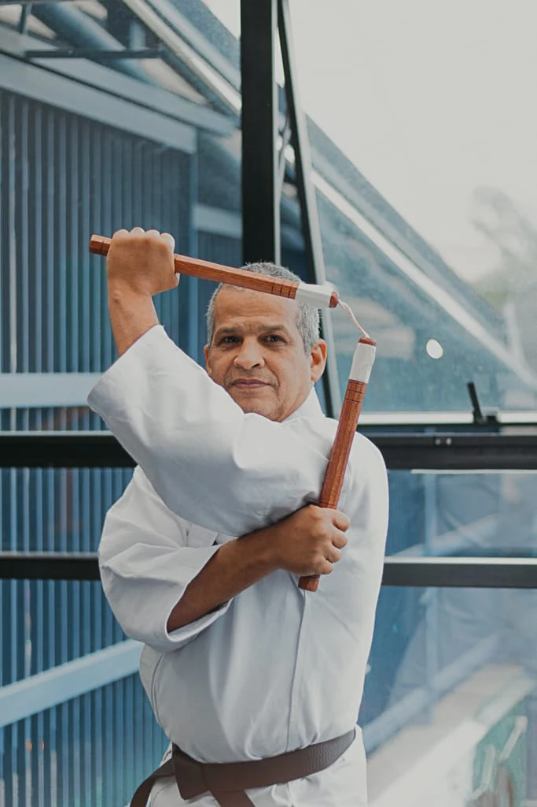
HISTÓRIA · DISCIPLINA · TRADIÇÃO
Foi na sala de casa, com o Shihan Ivam Silva ensinando karate, que a Cobras Akai começou. A academia passou por outros endereços até chegar ao espaço atual.
Os lugares mudaram. O ensino continuou. Entre aulas, competições e encontros, a Cobras Akai construiu sua trajetória junto às pessoas que treinaram e seguem treinando com o Shihan.
Conheça nossa história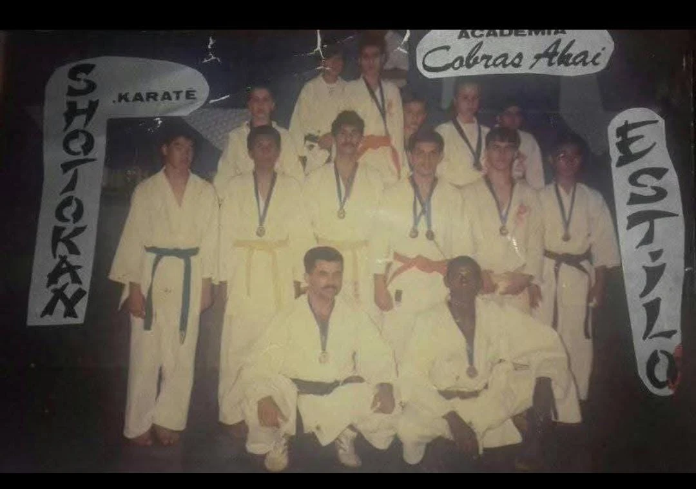
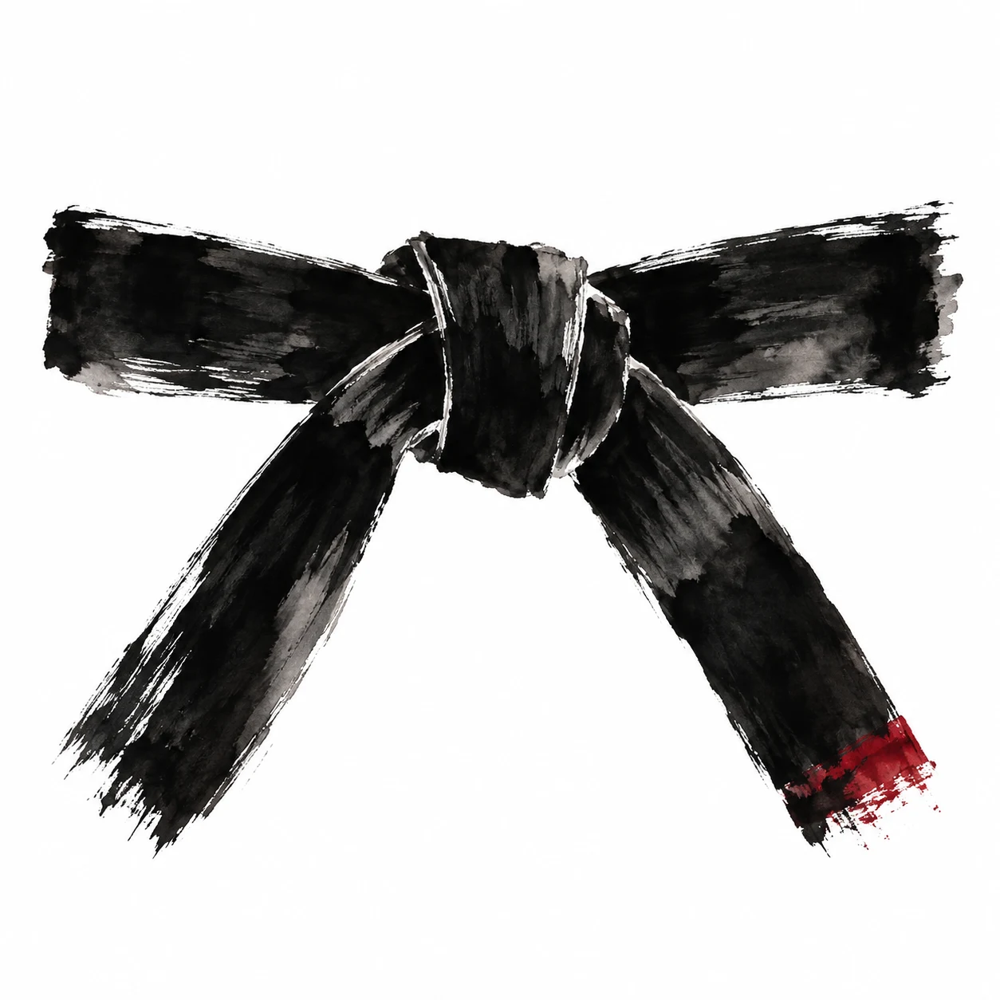
A VIDA NO DOJO
A Cobras Akai é feita das pessoas que se encontram no tatami. Conheça alguns desses momentos e venha conhecer a academia de perto.
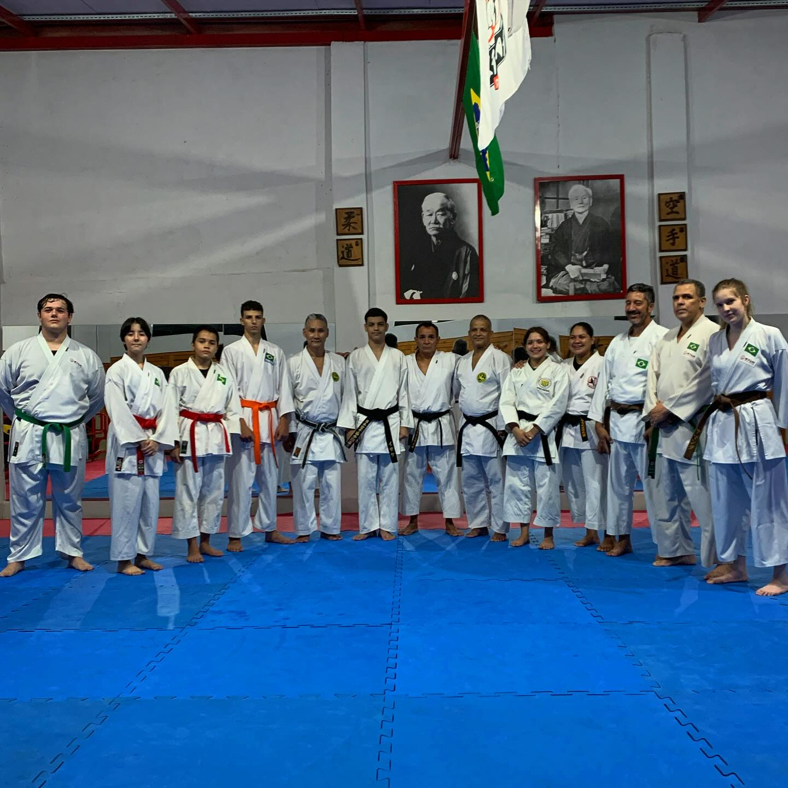
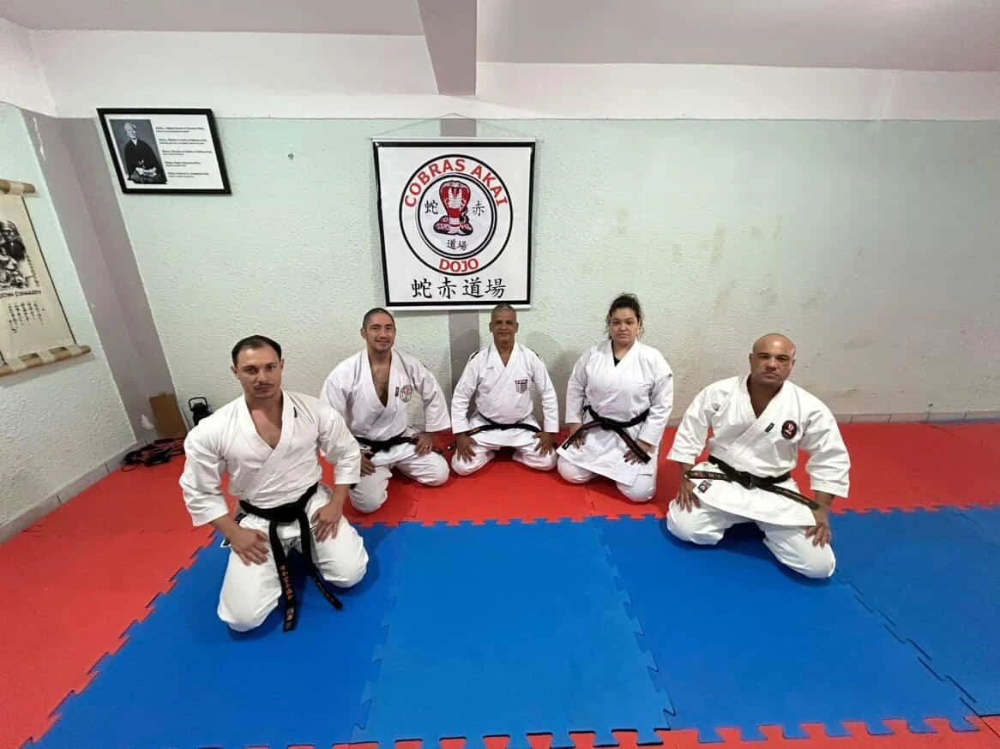
FORA DO DOJO
Encontros, medalhas e registros de participação que fazem parte do acervo da academia.
DETALHES DO ACERVO
Frente e verso da medalha preservada no acervo da academia.
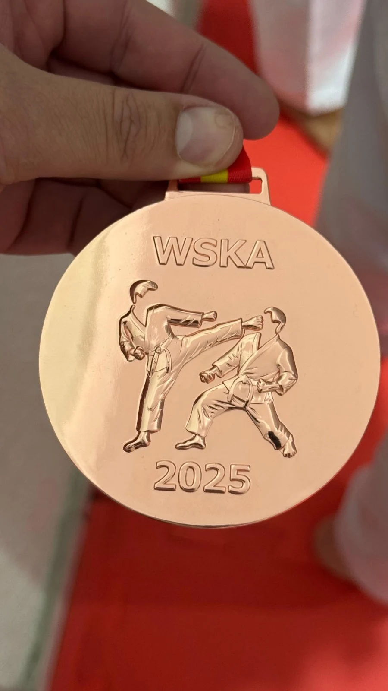
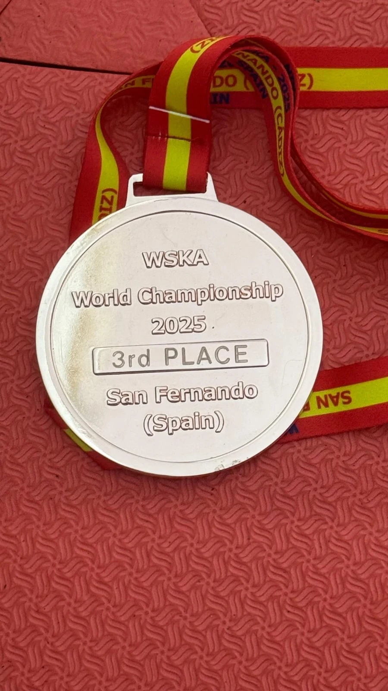
PARA CONHECER MELHOR
SEU PRIMEIRO CONTATO
Conte qual atividade chamou sua atenção e em quais horários você pode treinar. Fale com a equipe sobre as turmas e como participar da primeira aula.
QUERO COMEÇARRua Major Dantas Cortes, 687
Terça a sexta · 08h–22h
Sábado · 09h–14h